| Linh Ung Pagoda | Thien Mu Pagoda | Hue citadel |
|---|---|---|
| 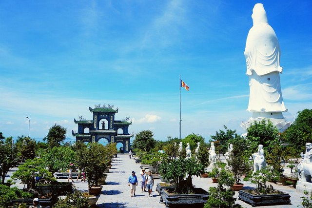 | 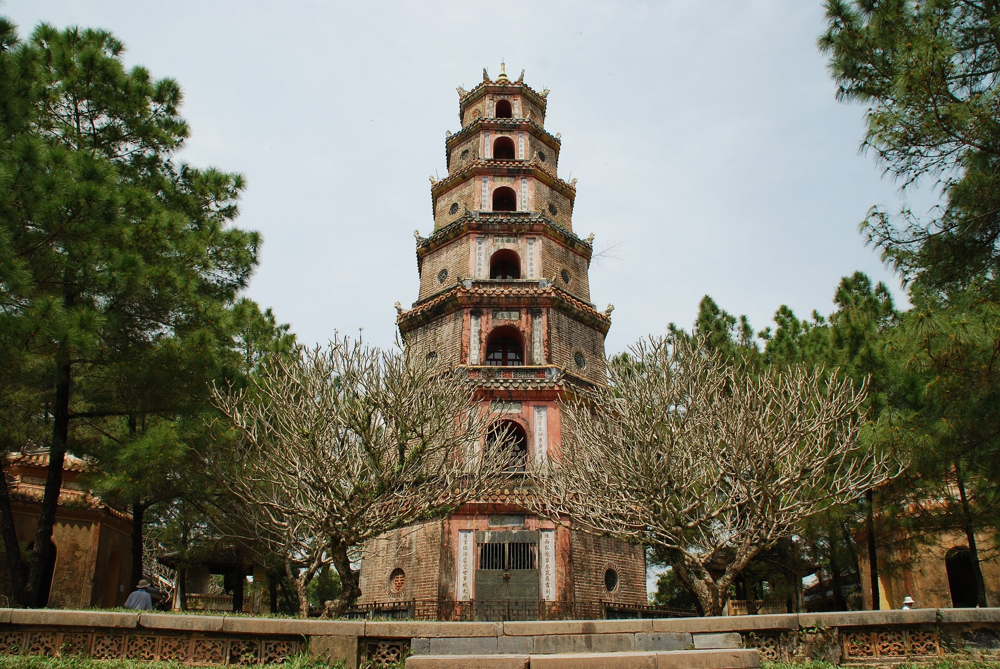 | 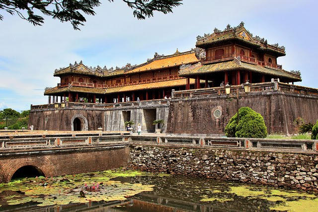 |
| Arrive in Danang, enjoy a walk to My Khe beach where you could enjoy the view to giant Goodness of Mercy statues in the Linh Ung Pagoda.Take photos of fishermen activities by the beach and visit Cham Museum. | In the afternoon, visit Thien Mu Pagoda, one of the oldest pagoda in Hue, dating back 1601.This is a spiritual highlight of the city and well known for its majestic octagon tower and beautiful view. | Then continue to the most anticipated site in Hue: Hue citadel, the only vestige symbolizes for what was once the imperial city of Vietnam. It is inspired by the fortification of Vauban. Return to your hotel Overnight in Hue. |
| Minh Mang tomb | Thuy Bieu Village | Traditional garden house |
|---|---|---|
| 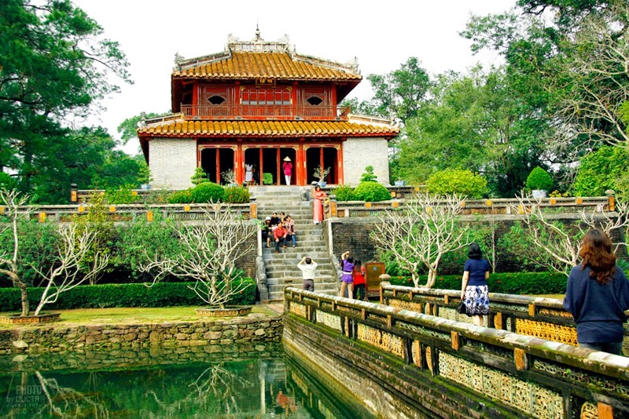 | 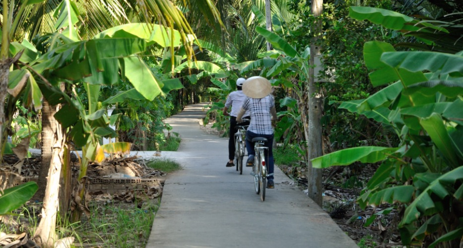 | 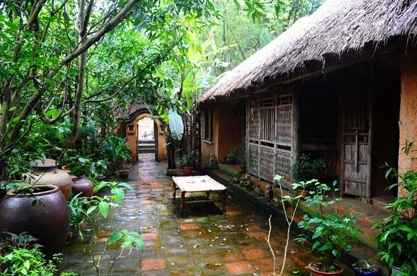 |
| At 8.00, transfer upstream of the Perfume river to visit the emperor Minh Mang tomb, an architecture masterpiece that harmoniously highlights the nature and imperial religious works. | After that, we will take boat trip along the Perfume River to Thuy Bieu Village.The boat trip will offer you the picturesque landscapes on the two sides. | Then visit a temples dedicated to the village protector, a traditional garden house with hundred year of age. Obviously, stop for great photos and contact with the peasants working in the gardens and vegetable fields should not be missed. |
| Halong via Bac Ninh and Sao Do | Bai Tu Long Bay | Canh Son cave |
|---|---|---|
| 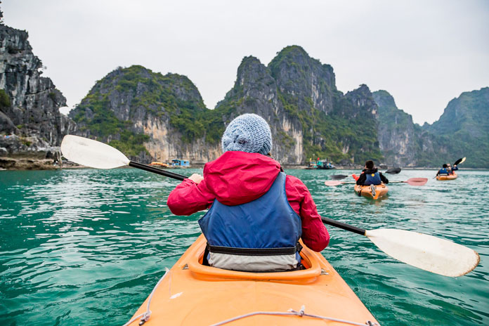 | 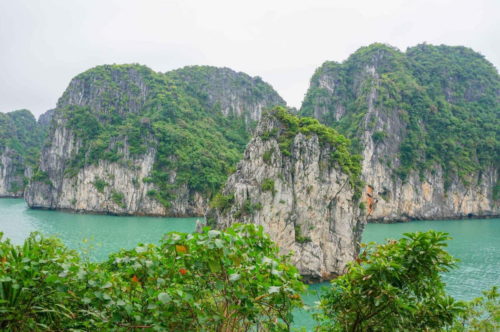 | 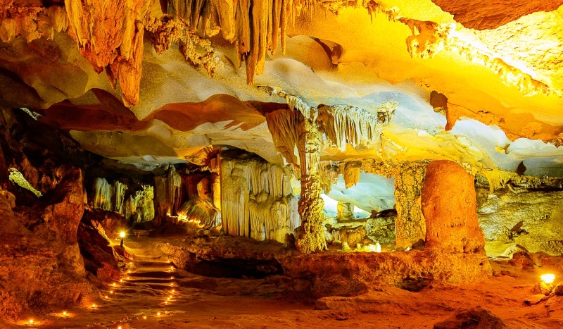 |
| At 8.00am, our driver will meet you for a transfer to Halong via Bac Ninh and Sao Do.Extensive rice fields as far as your eyes can see will follow you along the way. | Lunch on boat with seafood while cruising in to the bay through the enchanting landscapes of Bai Tu Long Bay ( Small Dragon Bay). | Take part in activities according to the boat such as: visit Thien Canh Son cave, do kayaking, bamboo sampan ride to the Vang Vieng fishing village or just simply lazy on boat.enjoy a sumptuous dinner on boat. Overnight on boat with private cabin (with air conditioner and bathroom). |
| Bai Tu Long | Fishing village | Hon Gai port |
|---|---|---|
| 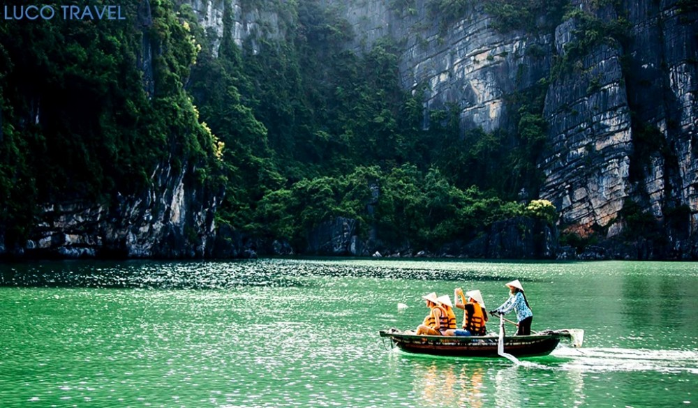 | 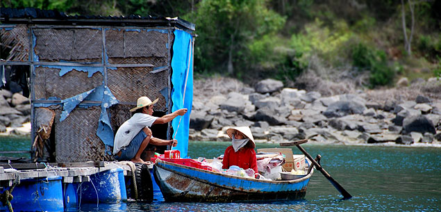 | 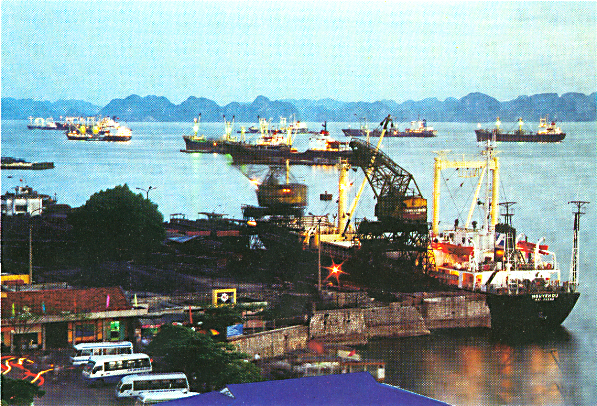 |
| You are advised to get up early to enjoy the fresh air and sunrise in the beautiful scenery of Bai Tu Long. Breakfast on the boat. | Either visit the cave or embark a small bamboo sampan to visit Vung Vieng Fishing village one of the spectacular floating villages in Halong. | ruise back to Hon Gai port.On the way back, we will enjoy lunch on boat.Last look at the legendary bay where dragons descended. Arrive the pier and take a transfer back to Hanoi On arrival, Check in hotel and relax. |
| Price List | |
|---|---|
| Numbers of people | Usual Price |
| Single | $1120 |
| Dual | $2200 |
| Triple | $3300 |
| Four and above | $1100 for each |